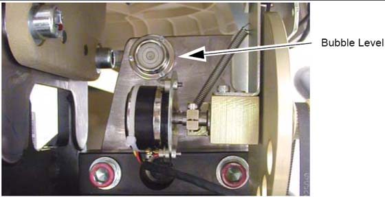
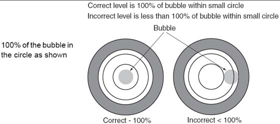
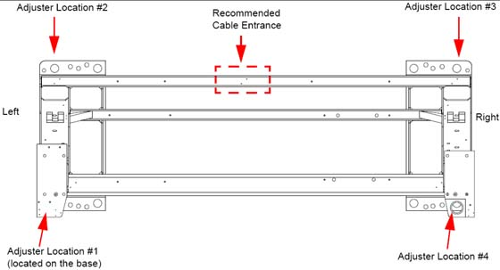
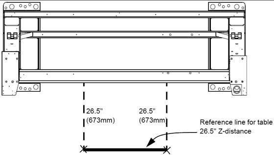

Operating Documentation
Direction 5193574-800, Rev# 22
LightSpeed 7.X Service Methods
Module Version 1.0, Version Date 4/22/10
Operating Documentation |
| Required Persons | Preliminary Reqs | Procedure | Finalization |
|---|---|---|---|
| 2 (FE or mechanical supplier) | Not Applicable | Not Applicable | Not Applicable |
This procedure is designed for gantries that are mounted on 102 mm (4 in.) concrete floors that meet all of the pre-installation flooring requirements.
The gantry uses two (2) bubble levels that are permanently mounted to machined surfaces on the stationary base to determine when it is level.
The bubble levels are located on both ends of the gantry stationary base near a point where the rotating structure pivot-mounts to the base structure. (See Illustration 1.)
Illustration 1: Gantry Bubble Level

| Item | Qty | Effectivity | Part# | Manufacturer | |
|---|---|---|---|---|---|
| Gantry Adjuster Tool | 1 | - | 2107863 | - | |
| Spanner Wrench | 1 | - | 2110003 | - | |
| Standard Install Tool Kit | 1 | - | - | - | |
| Install Support Kit | 1 | - | - | - | |
| GE Site Print | 1 | - | - | - | |
| VCT/CT750 HD Installation Manual | 1 | - | - | - | |
| PPE | - | - | - | ||
Loosen all adjuster lock rings (use a spanner wrench or large tongue and groove pliers).
Systematically turn each of the gantry’s adjusters (locations 1, 2, 3 and 4 in Illustration 3) until both bubble levels are centered left-to-right and front-to-back (see Illustration 2).
Begin by turning each adjuster no more than 1 turn at a time.
Use the adjuster tool, 1-1/8 in. socket, and the ½ in. drive ratchet to turn each adjuster. (Refer to Gantry Base Installation Hardware.)
Level the left side from front-to-back by turning adjusters #1 and #2.
Level the right side from front-to-back by turning adjusters #3 and #4.
Level the side (right or left) that is higher with respect to the other side. Turn both adjusters on a side equally until that side is level. The side should now also be level.
Illustration 2: Bubble Level Centering

| NOTE: | Gantry level is critical to system operation! |
When the bubble levels are centered (Illustration 2), each of the four (4) leveling pads should be carrying a portion of the gantry weight. Distribution of the gantry weight prevents the base frame from rocking during normal operation.
| NOTE: | The bottom of the gantry base must be at least 2.0 cm (3/4") above the floor to ensure that the base covers fit. Measure at all four corners and if any corner is to low, then the gantry will need to be raised. |
Illustration 3: Gantry Base Adjuster Locations - Top View

| ||||
| DO NOT leave any adjuster un-loaded or floating. | ||||
If there are floor obstructions, such as conduits or old anchors, be sure to cut them flush to the floor to prevent the gantry from resting on them. Also, be sure there is at least 102 mm (4 in.) of distance from any existing floor penetration to the new gantry anchor positions.
Using a measuring tape, measure and mark two spots 673 mm (26.5 in.) from the gantry base frame (under the front cable tray) out toward the table floor cutouts, as illustrated by X marks at the bottom of the dotted lines in Illustration 4.
Snap a chalk line using the two 673 mm (26.5 in.) marks. This line should be parallel to the gantry and 673 mm (26.5 in.) from the front of the gantry base. See Illustration 4. In a later section, you will move the table against the 673 mm (26.5 in.) mark and center it over a table center line (to be drawn at that time.)
Illustration 4: Table Base Reference Line and Marks

No finalization steps.